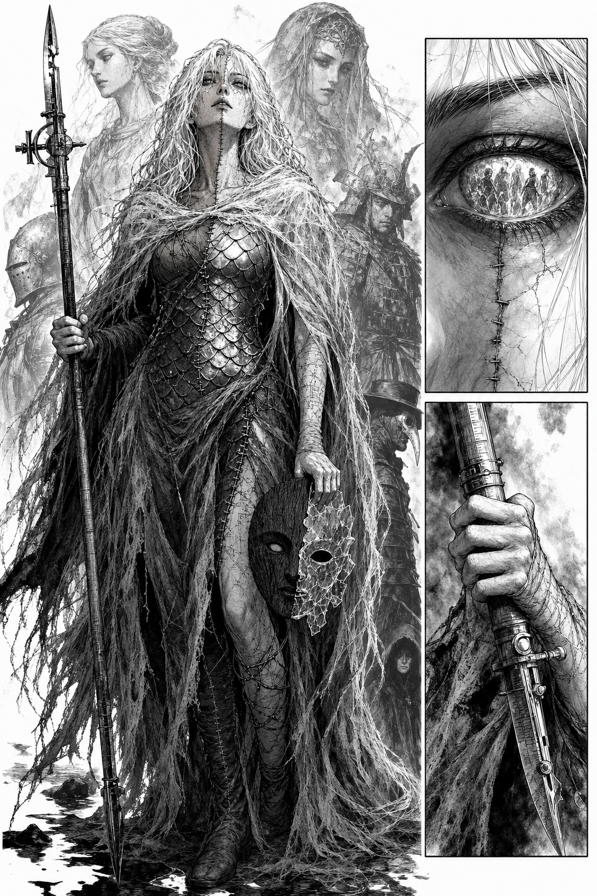
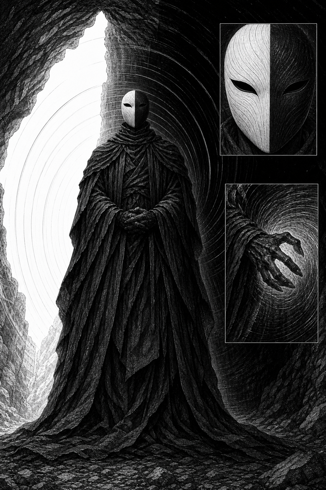
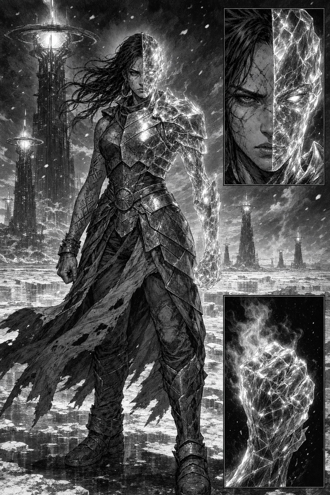

VESNA
A Devoradora · Crepuscularia · Renegada

- Força
- Maior potência bruta entre os mortais livres. 14 Resíduos devorados.
- Marca
- Pele dividida ao meio por uma costura no pescoço — lado direito sempre quente, esquerdo sempre frio.
- Arma
- O Medidor — bastão de cartografia que corta gradiente. Sela um vértice por 9 segundos.
- Fraqueza
- Não distingue mais passado de presente. Pode lutar sem saber em qual século está.
- Segredo
- Devorou um Resíduo de si mesma, vindo de um futuro onde a Faixa já colapsou. Viu o Sol se mover.
"Você não está aqui. Só a memória de estar."
O VIGIA DO VÉU
Ordem do Véu Perpétuo · Crepuscular de 4ª geração

- Força
- O pior cenário possível num único instante. Acumula gradiente sem descarregar, como uma represa prestes a romper.
- Marca
- Não conjura há 47 ciclos — de propósito. O ar ao redor dele se curva em direção ao corpo.
- Arma
- Nenhuma. Ele é a arma. Onde ele está, a Ordem não precisa lutar.
- Fraqueza
- Se descarregar, gasta tudo de uma vez. Uma represa só rompe uma vez.
- Segredo
- Ninguém fora da Ordem conhece seu rosto. Nem se ainda existe um rosto sob a máscara.
"O silêncio dele pesa mais do que qualquer conjuração já registrada." — Cartógrafos de Ménsura
SOLENNE DAS TORRES
Concordia Heliárquica · General Heliotrópica

- Força
- Maior alcance geográfico já registrado: derreteu 3 km de gelo nocturno em uma única noite — a Queima do Setor I-Norte.
- Marca
- Metade do corpo virou vidro solar vivo. Ainda se move. Ainda dói.
- Arma
- As torres de amplificação solar do Setor I — e o próprio corpo, que canaliza radiação direta.
- Fraqueza
- Perdeu toda memória anterior ao 12º Gotejamento. Não lembra por que luta — só que deve avançar.
- Segredo
- O lado de vidro registra memórias que não são dela. Às vezes, à noite, ele sussurra.
"Vesna destrói quem está na frente. O Vigia destrói quem está por perto. Solenne destrói o mapa."